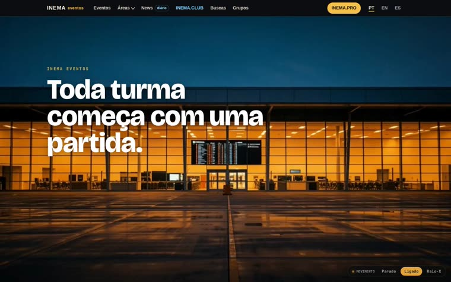
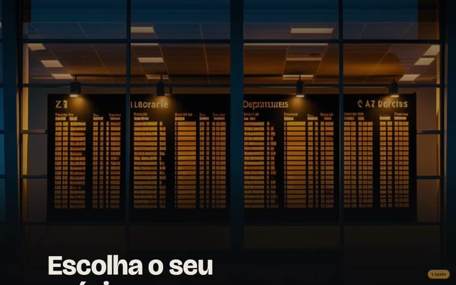
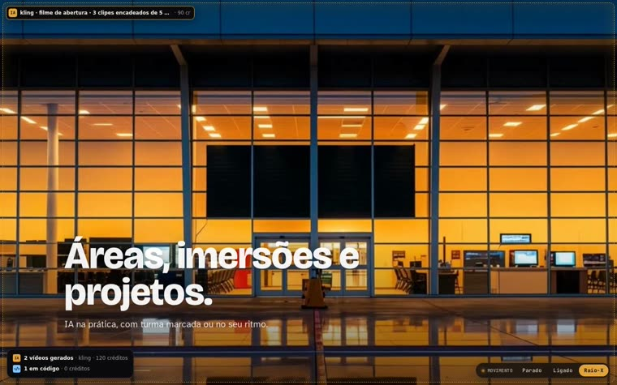
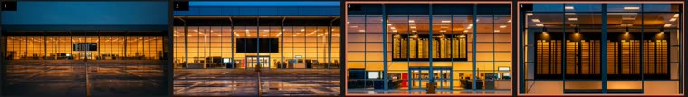

Video de IA encadenado cuadro a cuadro, sin saltos, y un gráfico animado en código en cada sección. Con el interruptor Detenido, Activo y Rayos X, que muestra qué es video y qué es código.
Sitio en Movimiento es una skill para Claude Code (y Codex) que arma un sitio cuya cabecera es un video continuo: la cámara avanza a medida que la persona desplaza la página. El video lo genera la IA en clips cortos encadenados, y los scripts comprueban que no haya saltos entre ellos. Debajo de la película, cada sección recibe una animación hecha en código que explica lo que dice. Sirve para quien quiere una página de apertura con aspecto de película. Necesitas Claude Code y, si quieres video de verdad, un generador de video (Kling, Agnes, Kie u otro); sin generador, arma todo en código.
Cada sitio se diseña desde cero. Lo que se repite es el método, los scripts que revisan el trabajo y el motor de la página.
Cada clip empieza en el último cuadro real del anterior. Los scripts miden si el generador respetó el cuadro inicial y final y si hay un corte escondido en el medio.
Kling por suscripción, Agnes, Kie o el tuyo (un comando con inicio, fin, prompt y salida). Sin generador, la película se vuelve escenas en código.
Un interruptor en la esquina alterna entre Detenido, Activo y Rayos X. En Rayos X, cada cosa que se mueve recibe una etiqueta: video de IA (con su costo) o código.
Ningún paso avanza sin pasar su compuerta. Las compuertas son scripts sin IA, de costo cero.
Pedirle a un modelo de imagen que "la cámara avance" suele devolver la misma foto. La skill recorta el centro del cuadro anterior, lo amplía y solo redibuja el detalle: el eje de la cámara queda garantizado.
vetor.py comprueba el sentido de la película antes de gastar; fixacao.py mide si el generador respetó los cuadros; cortes.py y continuidade.py encuentran cortes y congelamientos.
Tres críticos con contexto limpio juzgan las capturas, nunca el código: briefing, sistema visual y oficio (contra la referencia, a ciegas). El veredicto es solo PASSA o REPROVA.
El generador de video es opcional: sin él, el sitio sale en código puro.
Claude Code (o Codex), ffmpeg, Python 3 con numpy y Pillow, Node 18+ con Playwright.
pip install numpy pillow npx playwright install chromium
Uno de los motores: kling (CLI por suscripción), agnes o kie (clave tuya) o custom (cualquier comando).
kling login # una vez kling account -q # saldo
Para los keyframes: un servidor local (flux2-klein) sin costo, o el generador que prefieras.
curl localhost:8000/health
Comandos reales. La skill conduce todo a partir del paso 3; los comandos de abajo muestran lo que ocurre por debajo.
Clona el repositorio y enlaza la carpeta de la skill en Claude Code (y en Codex, si lo usas).
git clone https://github.com/inematds/site-movimento ~/projetos/site-movimento ln -s ~/projetos/site-movimento/skill/site-movimento ~/.claude/skills/site-movimento bash ~/.claude/skills/site-movimento/tests/motores-contrato.sh # 4/4 motores OK
Reúne de 3 a 10 imágenes o enlaces de sitios que admires, cada uno elegido por una razón.
/site-movimento Quiero un sitio en movimiento para <tema>. Las referencias están adjuntas. Lee las referencias, entrévistame y usa el motor kling.
Un solo lote de preguntas cortas (tema, clima, el viaje de la cámara, secciones, acción, motor). No se gasta nada antes de tu sí.
# plan Prueba en Kling 720p: 3 clips + 1 loop = 120 créditos (medido) # plan Estándar: 5 clips + 2 loops = 210 · Completo: 7 + 4 = 330
El primer keyframe sale del prompt; los siguientes, por aproximación. La hoja muestra si algún paso giró la cámara o quedó detenido.
python3 $S/motores/imagem_local.py kf/kf01.png "<escena de apertura>" python3 $S/scripts/kf_aproxima.py kf/kf01.png kf/kf02.png "<la escena más cerca>" --fator 1.8 python3 $S/scripts/folha_kf.py kf/ # ok / OLHE / QUEBRA? / PARADO
Comprueba el sentido gratis; después la película sale en orden, cada clip empezando en el último cuadro del anterior.
python3 $S/scripts/vetor.py filme/roteiro.json # PASSA antes de gastar MOTOR=kling bash $S/scripts/filme.sh filme/ # fixacao + cortes en cada clip python3 $S/scripts/montar.py site filme/clipes/c1.mp4:0:-1 filme/clipes/c2.mp4:1:-1 python3 $S/scripts/continuidade.py site/frames 4 # PASSA: un solo movimiento
La página usa el motor de scroll y el interruptor de movimiento. Los críticos juzgan capturas; el texto y los tirones pasan por compuertas.
bash $S/scripts/pacote-criticos.sh topo "http://127.0.0.1:8871/site/" node $S/scripts/portao-texto.js site/index.html # texto limpio node $S/scripts/verificar.js jank "http://127.0.0.1:8871/site/" # máx < 50 ms
Cualquier IA entra por el motor custom. Prueba la fijación en el primer clip antes de encadenar la película.
export MOTOR=custom export MOTOR_CMD='meu-cli --start {inicio} --end {fim} -p {prompt} --sec {segundos} -o {saida}' bash $S/scripts/filme.sh filme/
Una copia de prueba de la home de eventos.inema.pro. La cámara sale de la pista al anochecer, entra en la terminal y se detiene en el panel de partidas, y el panel real de la página sube por encima de lo filmado. Abrir el piloto.




3 clips de 5 s + 1 loop en Kling 720p: 150 créditos (un loop rehecho). Fijación de los cuadros entre 0,91 y 0,997. Cero cortes. 361 cuadros. Tirón máximo de 33 a 36 ms.
Marco que se desliza por las áreas, ruta con avión en la agenda, barra de grabación, línea que une las cuatro puertas, archivos entrando en la carpeta y un avión que despega en el pie de página.
Lista de noticias vacía, frase final borrada, interruptor tapando contenido y la película sin "aterrizar" en el panel real. Esos cuatro se corrigieron. En la 2ª ronda los críticos aún reprueban: el panel generado por la IA tiene letras deformadas y las capturas muestran franjas negras mientras cargan los cuadros.
Mismo briefing para un modelo rápido y barato y para el modelo más fuerte. Detalles en 7-delegacao.md (en portugués).
15 piezas de interfaz juzgadas a ciegas: el modelo menor tuvo 2 de 5 aprobadas, el tope 8 de 10. El menor pasó todas las pruebas automáticas y falló en la identidad visual.
Los tres críticos ejecutados en los dos modelos dieron los mismos veredictos y la misma mayor diferencia, en menos de un minuto cada uno.
El modelo menor juzga y arregla; el tope crea. Ffmpeg, SSIM, cortes, montaje y capturas quedan con scripts, sin modelo.
Antes de inventar una animación, la skill busca en el catálogo: búsqueda ⌘K, grilla bento, 404 jugable, día y noche, pies de página con física, cortina, flor, mapa y rompe-bloques, menú que se transforma, menú a pantalla completa, navegación que salta, calcomanía holográfica, mascota que sigue el cursor, dock líquido, botones de gelatina, letrero de placas, rastro de imágenes, galería giratoria y carga que revela la página. Todas con Rayos X.
Solo lo que se hizo está marcado como hecho.